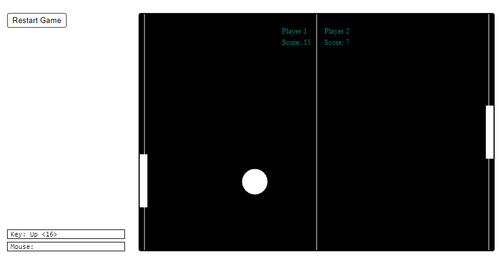

Python Programmer
Grand Rapids, MI
I designed a two-player game similar to Pong by Atari, Inc. Primary functions include key handlers, a draw function with updates, a ball spawner, and a new game function. This Python program runs using two imported packages, simpleguitk and random.
As soon as the code is run, the game starts by generating a ball with a random velocity and direction (within certain constraints so as to not make the ball too fast or the angle of the ball such that it would take a long time for the ball to reach a paddle). Player 1 uses the 'w' and 's' keys to move the paddle up and down. Player 2 does the same using the up and down arrow keys. The players attempt to bounce the ball off their padddle, preventing the ball from falling in their respective gutter. If a ball falls into the gutter, a point is awarded to the opposing player.
After the program was working in CodeSkulptor (an interactive, web-based Python programming environment that allows Python code to be run in a web browser), I ran into an issue in which player 2's paddle remained locked or unresponsive to the up, left, and right arrow keys. Since I am having a similar issue with another program in CodeSkulptor and since this program was bug free for a couple months, I suspect the issue might be related to a browser update or CodeSkulptor udpate.
Go to my repository in GitHub to see my code or click on this link to run this program in CodeSkulptor.
{kind=link}